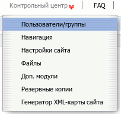

Название
Навигация — Управление навигацией и структурой сайта
О модуле
| Тип | Административный |
| Можно создать копий | Только одну |
| Присутствует по умолчанию | Да |
| Можно удалять | Нет |
Этот модуль позволяет администратору манипулировать структурой сайта - добавлять и удалять разделы сайта, изменять их тип и взаимное расположение, настраивать внешний вид основного и дополнительных навигационных меню а так же управлять мета-информацией о сайте (информация необходимая для оптимизации сайта в поисковых машинах). Структура сайта всегда представляет из себя дерево вложенных друг в друга разделов сайта. Глубина вложенности разделов ограничена только здравым смыслом администратора.
Настройки модуля разбиты на три подраздела:
Основная навигация
→ →
В первом подразделе настраивается собственно структура сайта - из каких разделов будет состоять сайт и как они будут друг в друга вложены. Структура сайта представлена в виде списка его страниц, вложенность обозначена с помощью отступов, что напоминает обычное представление дерева каталогов, например, в Проводнике Windows.
Доступно два общих действия, которые осуществляются из верхнего меню, расположенного над списком страниц сайта.
- →
Добавление новой страницы в структуру сайта, после нажатия на эту иконку нужно заполнить основные параметры страницы.
- →
Настройка общих параметров навигации по сайту.
Кроме этого, для каждой уже созданной страницы сайта доступны такие настройки.
- Загрузить иконку или установить по умолчанию
При щелчке по текущей иконке страницы можно ее изменить, загрузив новую или использовав стандартную. Иконка страницы отображается в верхнем и нижнем дополнительных меню, а также в основном меню при включенной соответствующей опции в общих параметрах навигации сайта.
 Редактировать
РедактироватьНастройка основных параметров страницы.
 Переместить страницу вверх
Переместить страницу вверхПереместить страницу и все ее подстраницы выше в меню.
- Переместить страницу вниз
Переместить страницу и все ее подстраницы ниже в меню.
- Отображение путей на странице
Настройка отображения путей на данной странице. Переопределяет общие настройки сайта для данной страницы.
 Удалить
УдалитьУдаление соответствующей страницы.
Общие параметры навигации сайта
→ → → →

В этом разделе можно настроить внешний вид главного меню и отображаемого пути к текущей странице. Доступны такие параметры:
- Тип навигации сайта
Можно выбрать один из трёх способов навигации сайта.
- Одно основное меню
Отображать только главное меню. Ниже можно выбрать позицию на странице для основного меню.
- "Комби". Одноуровневое меню верхнего уровня + вспомогательное меню текущего раздела.
Отображать главное меню и меню текущего раздела, например категории каталога, подстраницы и т.п. При выборе этого типа навигации появляются две дополнительные настройки - для положения вспомогательного меню на странице и отображения иконок страниц во вспомогательном меню.
- Одно основное меню с javascript (Раскрывающееся меню)
Отображается одно основное меню, но при наведении мышкой на пункт, содержащий подразделы, появляется вспомогательное меню данного раздела.

- Основное меню - позиция на странице
Можно выбрать расположение основного меню на странице, наиболее подходящее внешнему виду сайта. Доступны варианты: слева, справа, сверху.
- Показывать иконки в основном меню
Показывать или нет иконки в главном меню сайта.
- Отображение путей по сайту и внутри страницы
Эти настройки определяют, как будет отображаться путь к текущей странице в заголовке окна и на самой странице. Путь разделяется на две части: путь до текущей страницы и путь внутри нее (по ее разделам).
Подсказка
Посетителю всегда удобно видеть где он находится и иметь возможность вернуться на один из предыдущих шагов, но если структура вашего сайта сложна и пути на странице становятся слишком длинными, имеет смысл сократить их отбросив какие-то элементы.
Основные параметры страницы

→ → → Редактировать (для каждой страницы)
- Название
Название страницы, которая будет генерироваться модулем, это название будет фигурировать в главном меню и на карте сайта.
- Альтернативное название (title)
Этот текст будет использован для титула страницы.
- Описание
Здесь можно задать краткое описание страницы. Оно отображается ввиде всплывающей подсказки при наведении мыши на соответствующий пункт основного меню и напротив ссылки на страницу в _карте сайта_.
- Виртуальная директория
Часть URL, несуществующая директория на сервере при обращении к которой выдается страница, сгенерированная данным модулем. В браузере это будет выглядеть примерно так:
http://you-site.com/virt-dir- Родительская страница
Страница, внутрь которой будет помещена текущая страница т.е. подразделом какого раздела она будет являться. -- означает самый верхний уровень, ссылки на станицы верхнего уровня помещаются в основное меню (если в настройках видимости не выбрано другое).
- Видимость
Определяет, где автоматически будут размещены ссылки на данную страницу. Возможны такие значения:
- Весь сайт
Ссылка на эту страницу будет присутствовать в главном меню и на карте сайта.
- Только карта сайта
Ссылка на данную страницу будет присутствовать только на карте сайта.
- Невидимый
Ни в главном меню, ни на карте сайта не будут добавлены ссылки на эту страницу, чтобы на нее можно было хоть откуда-нибудь с сайта перейти, нужно вставить ссылку на нее в текст другой страницы, в противном случае перейти на нее можно будет непосредственно по ее адресу.
Подсказка
Кроме этих двух мест (главное меню и карта сайта) ссылка на страницу может автоматически появляться в верхнем и нижнем дополнительных меню.
- Ограничения видимости
Категория пользователей, которые могут просматривать страницу. Может принимать такие значения:
- Нет
Страница доступна для просмотра и авторизованным и неавторизованным пользователям.
- Только авторизованные пользователи
Страница доступна для просмотра только авторизованным пользователям.
- Только неавторизированные пользователи
Страница доступна для просмотра только неавторизированным пользователям.
- Доступ по умолчанию
Определяет права доступа к данной странице по умолчанию, т.е. права для неавторизованного посетителя, а также для авторизованных пользователей, для которых права на данную страницу не определены.
- URL переадресации
Здесь можно указать URL страницы, на которую посетитель будет автоматически перенаправлен при переходе на данную страницу.
Отображение путей на странице
→ → →
Здесь можно переопределить для данной конкретной страницы глобальные настройки отображения пути, заданные в общих параметры навигации сайта.
Дополнительная навигация
→ →
В этом подразделе находятся настройки дополнительных меню. Верхнее и нижнее - отображаются, как правило, сверху и снизу страницы. Тут доступны два действия.
- Выбрать страницы для этого меню
Выбор страниц сайта, отображаемых в каждом из дополнительных меню.
- →
Настройка для каждого дополнительного меню его внешнего вида, возможные варианты - только текст, только иконки, текст вместе с иконками.
Также можгут быть созданы дополнительные боковые меню. Это осуществляется через меню → . На появившейся странице доступны следующие опции.
- Название
Здесь можно задать заголовок меню (отображается сверху).
- Расположение
Положение меню - справа или слева.
- Страницы, для показа меню
В раскрывающемся списке можно выбрать страницы, на которых будет отображаться дополнительное меню.
- Страницы, включенные в меню
В раскрывающемся списке можно выбрать страницы, на которые будет ссылаться меню.
После создания меню будут отображаться в общем списке. Для уже существующих дополнительных боковых меню доступны следующие действия:
- Редактировать
Изменение опций, заданных при создании
- Удалить
Удаление меню
META-теги
→ →
Здесь определяются META-теги для страниц сайта. Можно определить их для сайта в целом и для каждой страницы в отдельности. Если один и тот-же META-тег определен и для сайта и для отдельной страницы, то для нее генерируется оба этих тега.
Все страницы сайта отображены ввиде дерева. Чтобы задать теги нужным страницам, щелкните на кнопку  рядом с названием страницы. Появится окно в котором можно редактировать уже существующие теги для страницы и добавлять новые
рядом с названием страницы. Появится окно в котором можно редактировать уже существующие теги для страницы и добавлять новые
Также модуль позволяет редактировадь файл robots.txt.
Содержание файла отобразится в появившемся текстовом поле. Вы можете редактировать его как в обычном текстовом редакторе.
По окончании редактирования нажмите кнопку Отправить. Изменения будут записаны в файл.